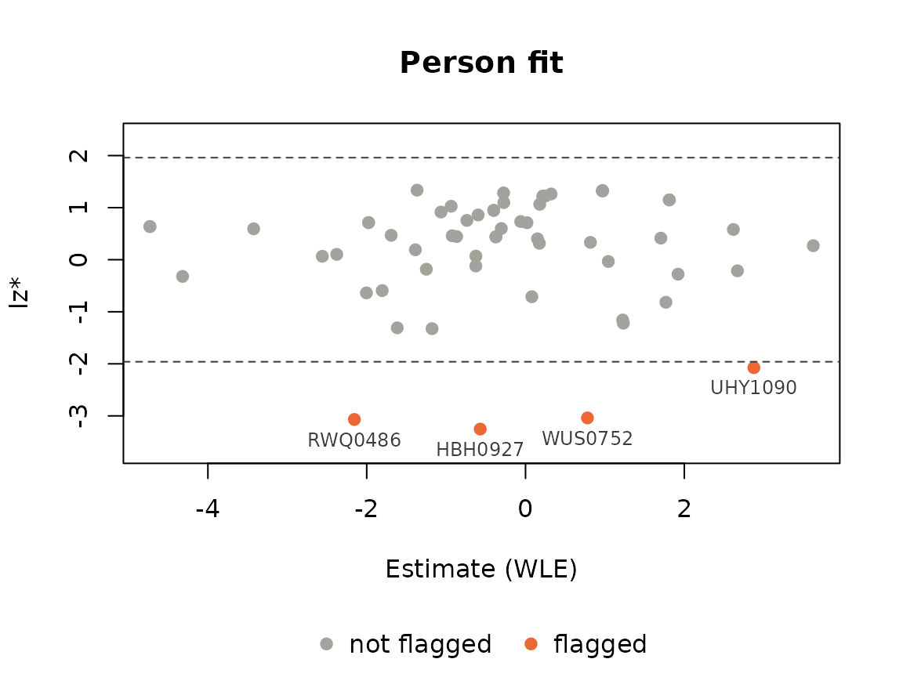

Person assessment with PPass, also for eRm models
Manuel Reif
Source:vignettes/ppass_erm.Rmd
ppass_erm.RmdPPass() (Person
Parameter assessment) estimates the
abilities, computes the person fit and returns both in one table,
together with the other person variables. It accepts
- a data.frame (or matrix) with item responses, together with known item parameters, or
- a model fitted with the eRm package: the Rasch model, the linear logistic test model, the rating scale model, the partial credit model and their linear versions, also with several time points and groups.
Data with item parameters
fourpl_df contains an id, the sex and the responses of
60 persons to 12 items of a 3PL test. items names the item
columns (positions or names); all other columns are kept as person
variables. mod chooses the model, and the item parameters
must match it.
library(PP)
data(fourpl_df)
res <- PPass(fourpl_df, items = 3:14,
thres = attr(fourpl_df, "diffpar"), slopes = attr(fourpl_df, "slopes"),
lowerA = attr(fourpl_df, "lowerA"))
res
#> Person assessment: 60 persons, 12 items
#> Model: 3PL model | WLE estimates
#> Status: 60 ok
#> Person fit: lz, lzstar, infit, outfit
#> Flagged (|lzstar| > 1.96): 4 persons
#>
#> id sex estimate SE status lz lzstar infit in_t outfit ou_t
#> 1 LVL0694 w -0.936 0.767 ok 1.019 1.026 0.692 -1.0907 0.5342 -0.866
#> 2 BBU1225 w 1.811 1.022 ok 1.101 1.149 0.377 -1.5365 0.2061 -0.526
#> 3 MJN2028 w 0.969 0.987 ok 1.270 1.324 0.288 -1.7568 0.2011 -1.204
#> 4 TSU0771 m 1.224 1.008 ok -1.039 -1.157 1.487 0.9781 1.9539 1.107
#> 5 XDS0698 w 0.252 0.925 ok 1.187 1.224 0.436 -1.3918 0.3219 -1.257
#> 6 BOS1292 w -4.730 2.118 ok 0.998 0.637 0.108 -1.5050 0.0884 -1.196
#> 7 KFF1422 w 2.618 1.016 ok 0.545 0.580 0.765 -0.4927 0.3216 0.181
#> 8 DCQ0198 w 1.232 1.008 ok -1.099 -1.221 1.480 0.9681 2.2503 1.295
#> 9 FTT1492 w -2.377 0.913 ok 0.182 0.103 0.973 0.0586 0.7565 -0.157
#> 10 GCP0645 m -0.400 0.802 ok 0.922 0.948 0.678 -0.8861 0.5105 -0.932
#> ... 50 more persons
#> Not shown: lz_unst, in_chisq, in_df, in_pv, ou_chisq, ou_df, ou_pvBy default, PPass() computes WLE estimates and all four
person fit statistics (lz, lz*, infit and outfit). Other arguments of
PP_4pl(), PP_gpcm() and PPall()
can be passed on, e.g. type = "mle" or a prior for
type = "map". summary() shows the distribution
of the estimates, the person fit and the persons flagged by lz*
(two-sided, as in the summary of Pfit()):
s <- summary(res)
#> Person assessment: 60 persons, 12 items
#> Model: 3PL model | WLE estimates
#> Status: 60 ok
#> Person fit: lz, lzstar, infit, outfit
#> Flagged (|lzstar| > 1.96): 4 persons
#>
#> Estimates (status ok):
#> Min. 1st Qu. Median Mean 3rd Qu. Max.
#> -4.730 -1.278 -0.339 -0.313 0.969 3.624
#>
#> Person fit:
#> statistic n mean sd min max flagged
#> lz 60 0.245 1.012 -3.0334 1.33 3
#> lzstar 60 0.192 1.093 -3.2532 1.34 4
#> infit 60 0.870 0.430 0.1080 2.13 NA
#> in_t 60 -0.292 1.013 -1.7568 2.28 2
#> outfit 60 0.853 0.828 0.0884 4.29 NA
#> ou_t 60 -0.163 0.980 -1.3185 3.01 3
#>
#> Flagged persons (lzstar):
#> person id sex estimate lzstar
#> 26 HBH0927 m -0.57 -3.25
#> 60 RWQ0486 w -2.16 -3.07
#> 43 WUS0752 w 0.78 -3.04
#> 39 UHY1090 m 2.88 -2.07plot() shows the person fit map: lz* against the
estimate, with the critical values of summary() and the
flagged persons labelled, here by their id.
which = "precision" shows the measurement precision of the
test and which = "profile" the answers of single persons
(see ?"pp-plots").
plot(res, label = "id")
The result is a data.frame. It can be filtered, merged or written to
a file like any other data.frame; as.data.frame() drops the
extra information.
res[res$sex == "w" & res$status == "ok", c("id", "estimate", "SE", "lzstar")][1:5, ]
#> id estimate SE lzstar
#> 1 LVL0694 -0.936 0.767 1.026
#> 2 BBU1225 1.811 1.022 1.149
#> 3 MJN2028 0.969 0.987 1.324
#> 5 XDS0698 0.252 0.925 1.224
#> 6 BOS1292 -4.730 2.118 0.637
knitr::kable(head(as.data.frame(res)[, c("id", "sex", "estimate", "SE", "lzstar", "infit")]),
digits = 3)| id | sex | estimate | SE | lzstar | infit |
|---|---|---|---|---|---|
| LVL0694 | w | -0.936 | 0.767 | 1.026 | 0.692 |
| BBU1225 | w | 1.811 | 1.022 | 1.149 | 0.377 |
| MJN2028 | w | 0.969 | 0.987 | 1.324 | 0.288 |
| TSU0771 | m | 1.224 | 1.008 | -1.157 | 1.487 |
| XDS0698 | w | 0.252 | 0.925 | 1.224 | 0.436 |
| BOS1292 | w | -4.730 | 2.118 | 0.637 | 0.108 |
JKpp() and PV() work directly on the
result, without estimating again:
head(JKpp(res)$estimates)
#> estimate SE L excluded status
#> 1 -0.9723726 0.6735435 12 0 ok
#> 2 1.8740917 0.6208916 12 0 ok
#> 3 1.0570466 0.4916653 12 0 ok
#> 4 1.5539111 1.6822352 12 0 ok
#> 5 0.3442215 0.5400380 11 0 ok
#> 6 -5.8298151 0.5859734 12 0 okThe model follows from the item parameters: here slopes
and lowerA make it a 3PL model. A threshold matrix with
several thresholds per item gives the PCM (all slopes 1) or the GPCM;
together with lowerA or upperA it gives a test
with both dichotomous (4PL) and polytomous (GPCM) items, estimated with
PPall().
Models fitted with eRm
eRm estimates item parameters by conditional maximum likelihood;
eRm::person.parameter() then gives maximum likelihood
estimates of the abilities. PPass() takes the fitted object
and adds WLE, MAP, EAP and robust estimates, the person fit, the
jackknife and plausible values.
library(eRm)
rm1 <- RM(raschdat1)
res_rm <- PPass(rm1)
res_rm
#> Person assessment: 100 persons, 30 items
#> Model: Rasch model (eRm::RM) | WLE estimates
#> Status: 100 ok
#> Person fit: lz, lzstar, infit, outfit
#> Flagged (|lzstar| > 1.96): 4 persons
#>
#> estimate SE status lz lzstar infit in_t outfit ou_t
#> 1 -3.29 0.868 ok 0.411679 0.2080 0.722 -0.16277 0.478 -0.2043
#> 2 -2.72 0.688 ok 0.000319 -0.8777 0.946 0.07782 1.003 0.2821
#> 3 -2.33 0.596 ok 0.180246 -0.0421 0.954 0.03047 0.736 -0.2103
#> 4 -2.02 0.539 ok 0.518854 0.9215 0.845 -0.35622 0.661 -0.4994
#> 5 -2.02 0.539 ok 0.134508 -0.0476 0.952 -0.02333 0.857 -0.0800
#> 6 -2.02 0.539 ok -0.079114 -0.5862 1.034 0.21354 0.932 0.0643
#> 7 -1.76 0.499 ok 0.611982 1.0803 0.843 -0.47085 0.665 -0.6300
#> 8 -1.54 0.471 ok -0.229133 -0.6356 0.977 -0.00897 1.846 1.7622
#> 9 -1.54 0.471 ok 0.055611 -0.0814 1.029 0.19749 0.831 -0.2891
#> 10 -1.54 0.471 ok -0.081792 -0.3488 1.011 0.12597 1.023 0.1941
#> ... 90 more persons
#> Not shown: lz_unst, in_chisq, in_df, in_pv, ou_chisq, ou_df, ou_pvThe maximum likelihood estimates are the same as those of eRm:
res_mle <- PPass(rm1, type = "mle", fitindices = "lzstar")
pp <- person.parameter(rm1)
ok <- res_mle$status == "ok"
max(abs(res_mle$estimate[ok] - pp$theta.table[ok, "Person Parameter"]))
#> [1] 2.456019e-05eRm stores the parameters of the item categories as easiness
parameters. PPass() converts them into PP thresholds, so
the eRm package is not even needed to run PPass() on a
saved object. Partial credit and rating scale models are estimated with
PP_gpcm(), with all slopes equal to 1:
set.seed(2751)
thres <- rbind(c(-2, -1.2, -0.5, 0), c(-1, 0.3, 1, 1.5), c(0.5, NA, NA, 2))
x <- sim_gpcm(thres = thres, alpha = 1, theta = rnorm(300))
res_pcm <- PPass(PCM(x), type = "map")
summary(res_pcm$estimate)
#> Min. 1st Qu. Median Mean 3rd Qu. Max.
#> -1.5928 -0.5035 0.1379 0.0808 0.4635 1.9687With several time points (mpoints) and groups
(groupvec), every combination of item, time point and group
is a virtual item with its own parameters. A person answers the virtual
items of their group and gets one ability estimate across all time
points. eRm gives no person parameters for models with group contrasts;
PPass() does:
x2 <- sim_gpcm(thres = thres, alpha = 1, theta = rnorm(300, 0.5))
lpcm <- LPCM(cbind(x, x2), mpoints = 2, groupvec = rep(1:2, 150))
res_lpcm <- PPass(lpcm)
res_lpcm
#> Person assessment: 300 persons, 16 virtual items
#> Model: linear partial credit model (eRm::LPCM), 2 time points, 2 groups | WLE estimates
#> Status: 300 ok
#> Person fit: lz, lzstar, infit, outfit
#> Flagged (|lzstar| > 1.96): 7 persons
#>
#> group estimate SE status lz lzstar infit in_t outfit ou_t
#> 1 1 -1.0074 0.496 ok 0.260 0.271 0.872 -0.140 0.845 -0.1578
#> 2 2 -0.3677 0.454 ok 0.218 0.220 0.833 -0.285 0.972 0.0761
#> 3 1 0.2085 0.453 ok -1.223 -1.260 1.284 0.736 1.256 0.6987
#> 4 2 1.0699 0.500 ok 1.077 1.404 0.328 -1.768 0.377 -1.3477
#> 5 1 0.0114 0.450 ok 1.326 1.328 0.334 -1.975 0.374 -1.8644
#> 6 2 0.4210 0.458 ok 0.444 0.463 0.618 -0.835 0.668 -0.7103
#> 7 1 0.0114 0.450 ok -0.654 -0.656 1.053 0.264 1.164 0.5115
#> 8 2 0.2201 0.453 ok 0.782 0.797 0.578 -0.982 0.562 -1.0909
#> 9 1 -0.3797 0.454 ok -1.543 -1.634 1.398 0.986 1.586 1.3135
#> 10 2 0.0231 0.450 ok 1.377 1.379 0.477 -1.368 0.478 -1.4254
#> ... 290 more persons
#> Not shown: lz_unst, in_chisq, in_df, in_pv, ou_chisq, ou_df, ou_pvPlausible values need a prior, so they require an EAP or MAP
estimate, such as res_pcm above: